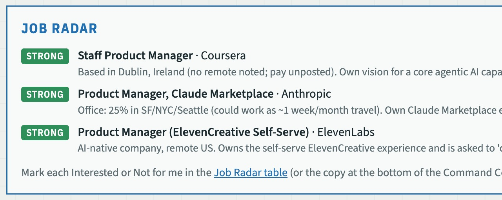

LinkedIn has hundreds of PM postings and no idea what I want. Job Radar pulls PM roles straight from the career pages of a few dozen companies I'm interested in, scores each one against a rubric of what I'm seeking next, and sends me only the strongest fits. I spend my time on the five roles worth a look, not the five hundred that aren't.

What happened. The first rubric described the jobs I'd like. The first sweep read 75 open roles and flagged 8 as Strong, and when I read those eight, several were wrong for me: big shared surfaces where the PM is a traffic cop, titles that sounded senior but owned no strategy.
What I changed. I rewrote the rubric around what I was actually optimizing for: space to originate product bets, AI centrality, momentum, plus the constraints I'd been avoiding writing down (pay floor, hours, work-life balance). Re-scoring the same roles gave 5 Strong, 14 Maybe and 52 Pass, and the Strong list was one I'd act on.
What happened. A Staff PM role at Coursera showed up as Strong on my dashboard (the screenshot above). It was based in Dublin, with no mention of remote. The work was a great fit, which is why the rubric liked it, but there's almost no chance of doing that job from Denver.
What I changed. Location is now two rules instead of one. A US-based role is a flag, never a disqualifier, because I'd like to be the candidate a hiring manager rescopes an HQ role to remote for. A role outside the US with no remote option is a pass, no matter how good the work is. It doesn't reach the table, let alone the dashboard.
RUBRIC.md, scores each role 1 to 5, and adds anything 3 or higher to a Notion table with one line on why it would be a good fit for me. The rubric checks two gates first, company trajectory and work-life balance, then ranks what's left on room to originate product bets, closeness to AI, level and problem space. Most of the specific rules came from my notes on real postings: "traffic cop" seats on shared surfaces cap at 3, roles outside the US with no remote option are a pass, and director titles are scored on strategy ownership rather than passed on title.